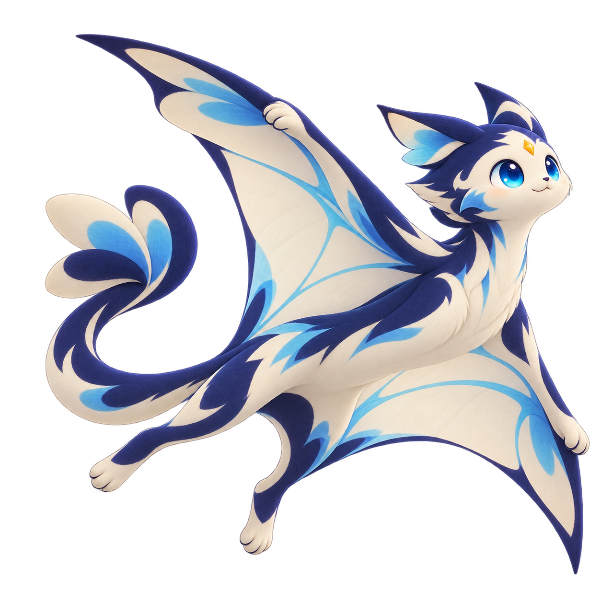
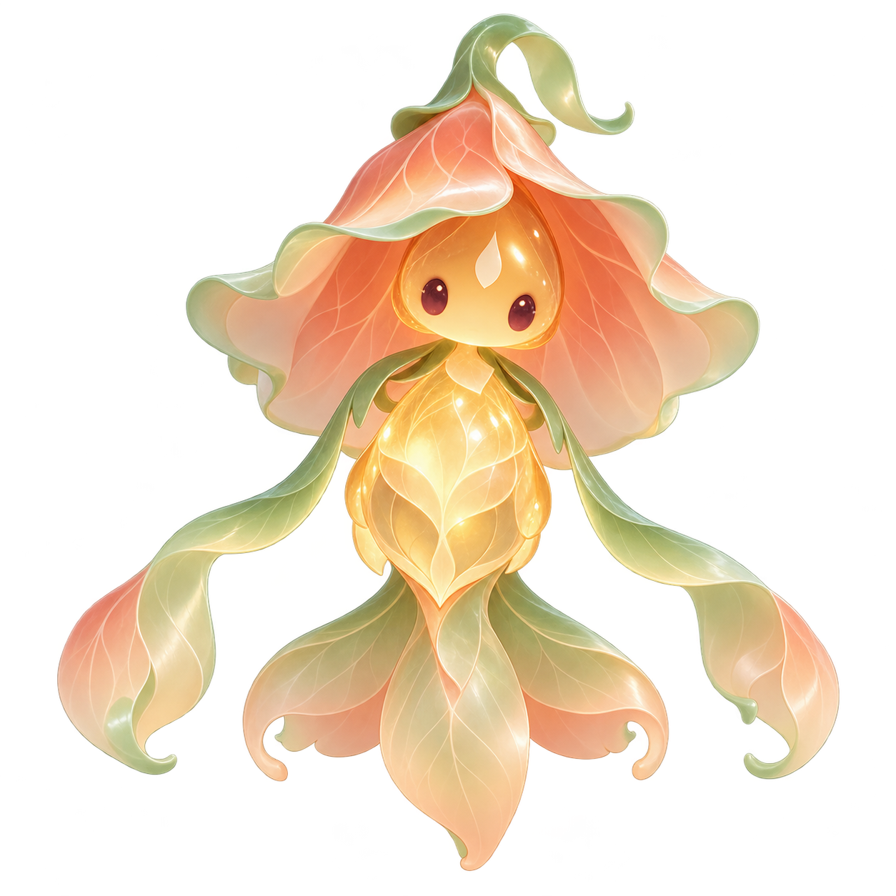

星澜：天空探索

记录：测试纸飞机、记录风向、合作放飞风筝、分享星座观察。
主题：空气、光与运动。
形态：四足发展为滑翔膜，后续轨道实验带来星轨结构。
学生意愿：无。不等待提问，照常生成。
模拟学生 A · 自动生成 · 从光影观察到天空探索
| 日期 | 学校指标 | 具体评价事件 | 成长值 |
|---|
中文为本次结构化整理，尚未重新生图。当前图片对应的实际英文输入保留在历史记录中。
指标名称用于模拟，正式含义以学校定义为准。成长阈值仅用于演示。图片已提前生成，点击不会调用生图接口。
预设创作规则，不预设宠物清单；以下是两份真实出图的模拟案例。
去重、按阶段整理，不只看总分
保留依据，不推断人格与能力
结合可选意愿、阶段轮廓与身份标志
参考图延续、质量检查、后台准备

记录：测试纸飞机、记录风向、合作放飞风筝、分享星座观察。
主题：空气、光与运动。
形态：四足发展为滑翔膜，后续轨道实验带来星轨结构。
学生意愿：无。不等待提问，照常生成。

记录：树叶拓印、观察花开、合作拼贴、用再生纸制作灯笼。
主题：植物形态、纸艺与温暖的光。
学生意愿：温暖、柔和、奇妙；希望探索“尚美”。
形态：花瓣钟罩、灯芯身体、叶带手臂；没有沿用天空伙伴的身体。
中文整理版，未重新生图；历史输入见交付包中的生图提示词-历史实际执行英文.json。
已验证：不同输入可以形成不同角色主题；同一谱系可以跨越软团、四足、滑翔和直立结构；阶段图片可复用通用互动与进化特效。
尚未验证：批量生成稳定率、真实学生满意度、生产模型费用。A 与 B 同时改变了记录与偏好，不能单独证明偏好带来的效果；正式试点需要相同记录/不同偏好、相同偏好/不同记录的控制变量测试。
本次由人工提炼模拟记录并编写提示词，再使用 imagegen 真实生图；不是已运行的自动评价分析系统。部分生成图留白较少，正式素材仍需构图质量门槛。
以下是规则交互模拟，配置只在本页临时生效。
按评价记录自动创作，适合普通班级与共享终端。
性别不作为默认必填项；偏好不绑定颜色、物种或强弱。配置变化只影响未来生成。
每只伙伴六张正式阶段图（含个性化蛋）；日常成长、点击回应和进化演出不新增生图，不生成视频。后台质量重试需设置上限。
不增加喂养、签到、亲密度和抽卡任务；不以停留时长衡量成功。究极体解锁一次新领养，旧伙伴与成长经历保留。
查看完整产品需求文档